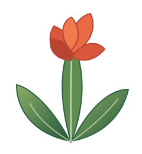

Crop production
Grow, test and diversify crops with an eye on soil, water and market needs.
Agriculture · Innovation · Opportunity
Where agricultural resources become new possibilities. We bring together production, practical learning, technology and resource optimisation to explore a more versatile future for agriculture.
Optimal Biodiversity
Our agricultural ecosystem
One connected ecosystem. Multiple pathways to value.
Grow, test and diversify crops with an eye on soil, water and market needs.

Explore breeding, feeding, recordkeeping and resilient herd management.

Learn by doing through field trials, student projects and shared knowledge.

Turn field observations into better decisions and more efficient systems.
The Canna principle
The canna lily is a model for resource versatility. Depending on species and cultivar, different plant parts have been explored for food, starch, fibre, animal feed, crafts and environmental applications.
We apply that same mindset to agriculture: look beyond the obvious, connect the value chain and find more useful outcomes from every resource.
Explore the value chains →
Ornamental planting, garden design and pollinator habitat.
Potential uses in beads, crafts and traditional instruments.
Starch and food applications in certain species.
Fibre, paper and potential fodder applications.
Research opportunities in wetlands, habitat and resource recovery.
Our living projects
Real-world agriculture is a continuous process of observing, testing and learning. This is where we can document our progress and invite collaboration.
Discuss a project →
Field trials
Documenting growing methods, crop performance and soil observations.

Livestock
Learning from breeding records, animal care and practical management.

Student projects
Creating space for applied research, practicals and knowledge exchange.

Resource innovation
Exploring responsible ways to reduce waste and improve resource use.
Learning in the field
We welcome conversations with students, researchers and institutions interested in field practicals, supervised projects, internships and collaborative experiments.
Opportunities depend on project readiness, supervision, safety requirements and available capacity.
Discuss a placement →Who can get involved?
Students & institutionsField practicals, research and more
ResearchersTrials, data and innovation
Farmers & industry partnersKnowledge exchange and supply chains
Investors & development partnersProject conversations and growth
Rooted in a bigger idea
BIG CANNA is an agricultural initiative within Donum Mod Consulting, shaped by a belief that innovation begins with asking better questions about the resources around us. We aim to connect production, learning, technology and collaboration in ways that can evolve with real-world needs.
Let's grow something useful
Tell us what you are working on and where collaboration could create value.